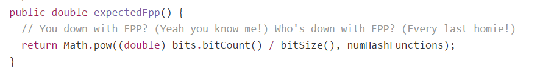

英文原始出处: Bloom filter for Scala, the fastest for JVM
本文介绍的是我用Scala实现的Bloom filter。 源代码在github上。依照性能测试结果，它是JVM上的最快的Bloom filter实现。零分配(Zero-allocation)和高度优化的代码。 无内存限制，所以没有包含元素的数量限制和可控的误报率(false positive rate)。
扩展：可插拔的Hash算法，任意的元素类型。
没错，它使用sun.misc.unsafe。
介绍
"A Bloom filter is a space-efficient probabilistic data structure that is used to test whether an element is a member of a set. False positive matches are possible, but false negatives are not. In other words, a query returns either “possibly in set” or “definitely not in set”. Elements can be added to the set, but not removed,” says Wikipedia.
Bloom filter 是由 Howard Bloom 在 1970 年提出的二进制向量数据结构，它具有很好的空间和时间效率，被用来检测一个元素是不是集合中的一个成员。如果检测结果为是，该元素不一定在集合中；但如果检测结果为否，该元素一定不在集合中。因此Bloom filter具有100%的召回率。这样每个检测请求返回有“在集合内（可能错报）”和“不在集合内（绝对不在集合内）”两种情况，可见 Bloom filter 是牺牲了正确率和时间以节省空间。 引自 百度百科
简而言之，Bloom filter是:
- 优化内存占用， 当整个集合太大而不能全部放到内存中。Optimization for memory. It comes into play when you cannot put whole set into memory.
- 解决成员存在性的问题。它可以回答下面的问题：一个元素属于一个集合还是不属于？
- 概率(有损)数据结构。它可以返回一个元素有多大的概率属于一个集合
后面这篇文章介绍的Bloom filter很详尽 - “What are Bloom filters, and why are they useful?” by @Max Pagels。我没必要再献丑了，如果你还不熟悉Bloom filter不妨看一看。
为何再造轮子？
因为性能或者内存限制的原因，已有的Bloom filter并不能满足我们的需求，或者你发现你可以做的更好。坦率的说，都不是。只不过有时候你厌倦了而已。(作者吐槽，可忽略之)
主要的原因是性能。当开发高性能和低延迟的系统的时候，你可不想被外部的库所拖累，甚至分配了很多的内存。你的注意力应该集中在业务逻辑上，依赖的库应该尽可能的有效。
另一个原因还是内存限制。所有的实现都会因为JVM数组的大小的限制而受限制。JVM中，数字使用整数integer做索引，所以数组的最大长度也就是整数的最大值2147483647。如果我们创建一个元素类型为long的数组存储比特位bit的值，那么最多我们可以存储64 bit * 2147483647 = 137438953408 bits,大概需要15 GB左右的内存。你可以放入大约10000000000左右的元素到误报率为0.1%的Bloom filter。这对于大部分软件来说足够了，但是当你处理大数据，比如URL，图标广告，实时竞价请求或者是事件流的时候，100亿的数据只是一个起步量。当然你可以有一些变通的办法：部署多个Bloom filter,将它们分布到多个节点，或者设计你的软件适应这些限制，但这些办法并不总是有效，可能花费较高护着不满足你的架构。
让我们看看当前已有的一些Bllom filter的实现。
Google guava
Guava是Google开发的一个高质量的核心库，它包含集合、基本数据、并发、I/O、Cache等模块。 它也包含一个Bloom filter实现。Guava是我的初始选择，它经受考验、也很快，但是……
令人咂舌的是，它会额外分配内存。我使用Google的Allocation Instrumenter监控所有的分配allocation。下面的分配监控显示了检查包含100字符的字符串是否存在于一个Bloom filter中:
I just allocated the object [B@39420d59 of type byte whose size is 40 It's an array of size 23 I just allocated the object java.nio.HeapByteBuffer[pos=0 lim=23 cap=23] of type java/nio/HeapByteBuffer whose size is 48 I just allocated the object com.google.common.hash.Murmur3_128HashFunction$Murmur3_128Hasher@5dd227b7 of type com/google/common/hash/Murmur3_128HashFunction$Murmur3_128Hasher whose size is 48 I just allocated the object [B@3d3b852e of type byte whose size is 24 It's an array of size 1 I just allocated the object [B@14ba7f15 of type byte whose size is 24 It's an array of size 1 I just allocated the object sun.nio.cs.UTF_8$Encoder@55cb3b7 of type sun/nio/cs/UTF_8$Encoder whose size is 56 I just allocated the object [B@497fd334 of type byte whose size is 320 It's an array of size 300 I just allocated the object [B@280c3dc0 of type byte whose size is 312 It's an array of size 296 I just allocated the object java.nio.HeapByteBuffer[pos=0 lim=296 cap=296] of type java/nio/HeapByteBuffer whose size is 48 I just allocated the object [B@6f89ad03 of type byte whose size is 32 It's an array of size 16 I just allocated the object java.nio.HeapByteBuffer[pos=0 lim=16 cap=16] of type java/nio/HeapByteBuffer whose size is 48 I just allocated the object 36db757cdd5ae408ef61dca2406d0d35 of type com/google/common/hash/HashCode$BytesHashCode whose size is 16
一共1016个字节。想象一下，我们计算一个短字符串的hash值，检查它相应的bit位设置已经设置，它需要分配大于1Kb的数据。太多了。那你可能会说内存占用已经很小了，好吧，当你做一个单独的微性能测试的时候，影响不是很大，但是在产品级的环境中，它会变得更糟：它会影响GC，导致分配变慢，触发GC，导致更高的延迟等。
不管怎样，review一下代码会很有趣，有时候你会发现一些复活节彩蛋在里面，比如下面的例子：

这些注释行来自Naughty by Nature说唱组合的歌曲“O.P.P.”,在上世纪90年代早期很流行。这段代码的开发者可能那时是四五十岁的人(偏题了)。
Twitter Algebird
Algebird "为Scala提供的抽象代数库，这些代码主要是用于建立聚合系统（通过Scalding或Storm）。 它是函数式functional，不可变
immutable, monadic,但是非常非常非常慢，并且仅仅支持字符串作为元素类型。字符串是万能的数据格式，你可硬用它存任何值 :) 。
它使用人人皆爱的MurmurHash3算法，它是最好的通用的hash算法。它计算出128-bit的 hash值，分割成4个32-bit的数字。然后它为每个32-bit的数字设置相应的位，而不是整个的hash值。这是相当有争议的设计，我进行了粗略的测试，测试表明Teitter Bloom filter有超过 10% 的误报率。
更深一步，有趣的是Twitter Bloom filter 底层使用 EWAHCompressedBitmap,它是一个压缩的可替代BitSet的实现。它专门为内存占用而优化，适合稀疏数据的场景。比如，如果你的位数从1000000开始，EWAH可以优化set而不会为前面的0位分配内存。集合的操作如交集、并集和差也更快。但是随机访问却很慢。 而且hash的目标就是有一个均匀分布的hash值，越均匀越好。这两点就排除了使用压缩bitset的好处。我做了一点点测试来检查整个的内存分配，结果显示Twitter Bloom filter比我的实现还要分配更多的内存。 同样，在我看来，Twitter的实现也是相当有争议。
内存检查的结果很长我就不贴了。为包含100个字符的字符串的检查要分配1808字节，我哭!
同样，它是函数式functional, 不可变immutable, 使用持久化数据结构, monad, 但这些不足以让我们使用它。 大话说在前， 它的读性能要比我的实现慢10倍，写要慢100倍。
ScalaNLP’s Breeze
Breeze is a generic, clean and powerful Scala numerical processing library… Breeze is a part of ScalaNLP project, a scientific computing platform for Scala
Breeze的介绍看起来很有吸引力，如清爽的新风，但是，有一个花招在它的实现里。它直接使用对象的hash值。 "WTF,我钟爱的MurmurHash3哪去了"，你可能会问。MurmurHash3仅仅用来计算最终的对象的hash值，没错，它可以和任意类型一起工作，但是你不会知道你的大数据集的细微差别(编者按:较难理解，需要配合代码一起理解。 英文原意为：It’s used only for “finalizing” the object’s hash. Yeah, it works with any type out-of-the-box but if you don’t know that little nuance you are done with large datasets.)
测试中它会分配544字节，看看代码你会发现通用的Scala的问题：
|
|
看起来很简洁：for语句，延迟计算,漂亮的DSL。但是当它编译成Java代码的时候就不那么好看了，它会分配很多对象: intWrapper(), RichInt, Range.Inclusive, VectorBuilder/Vector, boxing/unboxing 等等：
|
|
震撼吗？我想你被震惊了。接下来看看我的实现。
我是如何实现的？
一句话，我重新实现了Bloom filter的数据结构。源代码在github上，可以通过maven repository引用:
|
|
下面是使用的例子：
|
|
Unsafe
一个重要的设计就是底层使用sun.misc.unsafe包。使用它分配一块内存来保存bit，所以你需要主动dispose Bloom filter 实例和不受管的内存释放。而且我的实现还使用 usafe做了一些花招以避免内存分配，比如直接访问字符串内部的char数组。
type class模式
我的实现是可扩展的，你可以为任意类型使用任意的hash算法。它通过type class模式实现。如果你不熟悉它，你可以阅读@Daniel Westheide的文章 “The Neophyte’s Guide to Scala”。
基本上，你所需的就是实现CanGenerateHashFrom[From] trait,就像这样:
|
|
不幸的是，它是invariant不变类型。我想实现为逆变类型contravariant但是Scala编译器不能正确的解决contravariant implicits,将来在Dotty编译器中会支持。
缺省地提供了一个MurmurHash3的通用实现。我使用Scala实现了它，比Guava、Algebird、Cassandra的实现更快（希望我没有犯错）。为Long、String、Array[Byte]提供可开箱即用的库。作为一个福利，为无限唯一性(unlimited uniqueness)提供了128bit的版本。
零分配Zero-allocation
我的Bloom filter实现没有分配任何对象，代码被高度优化。我计划写一篇独立的文章来描述这些优化，敬请关注。通过一系列的unsafe技巧来实现的。下面是为String类型实现的 CanGenerateHashFrom trait:
|
|
使用unsafe.objectFieldOffset()方法获取String类型的value字段，它是字符串底层的char数组。然后使用unsafe.getObject()方法访问字符数组,用来计算hash值。
不幸的是，128-bit的实现会分配一个对象。我在(Long, Long) tuple和 ThreadLocal的字段选择上很犹豫，对于整体的性能，没有影响，有什么意见吗？在我的有生之年我希望能看到JVM的值类型, @Gil Tene的ObjectLayout尝试实现它。
限制
你可能已经注意到了，当前实现有一些限制。CanGenerateHashFrom[From] trait是不可变的invariant,它不允许回退到对象的hashCode()方法。你需要为你的类型实现它的hash算法。但我相信，为了性能这也是值得的。
并不是所有的JVM都支持，因为底层使用了“unsafe” 包，而且这也没有退路(fallback )的实现。
sun.misc.Unsafe至少从2004年Java1.4开始就存在于Java中了。在Java9中，为了提高JVM的可维护性，Unsafe和许多其他的东西一起都被作为内部使用类隐藏起来了。但是究竟是什么取代Unsafe不得而知。 摘自: http://www.importnew.com/14511.html
可以在Java中用它吗？
可以，但是代码不会和Scala一样漂亮，当然你已经习惯了这一切。Java中没有implicit，而且Java编译器也不会帮你调用它。在Java中使用它很丑但是能工作：
|
|
性能benchmark
我们都喜欢性能基准数据，对不？令人兴奋的数字在空中游荡，是那么的迷人。如果你准备写性能基准的测试，请使用JMH。 它是Oracle的性能工程师 @Aleksey Shipilev创建的一个微性能基准库： “for building, running, and analyzing nano/micro/milli/macro benchmarks written in Java and other languages targeting the JVM.”， @Konrad Malawski写了一个SBT的插件。
下面是一个String类型的基准测试，其它类型的测试结果和此类似：
[info] Benchmark (length) Mode Cnt Score Error Units [info] alternatives.algebird.StringItemBenchmark.algebirdGet 1024 thrpt 20 1181080.172 ▒ 9867.840 ops/s [info] alternatives.algebird.StringItemBenchmark.algebirdPut 1024 thrpt 20 157158.453 ▒ 844.623 ops/s [info] alternatives.breeze.StringItemBenchmark.breezeGet 1024 thrpt 20 5113222.168 ▒ 47005.466 ops/s [info] alternatives.breeze.StringItemBenchmark.breezePut 1024 thrpt 20 4482377.337 ▒ 19971.209 ops/s [info] alternatives.guava.StringItemBenchmark.guavaGet 1024 thrpt 20 5712237.339 ▒ 115453.495 ops/s [info] alternatives.guava.StringItemBenchmark.guavaPut 1024 thrpt 20 5621712.282 ▒ 307133.297 ops/s // My Bloom filter [info] bloomfilter.mutable.StringItemBenchmark.myGet 1024 thrpt 20 11483828.730 ▒ 342980.166 ops/s [info] bloomfilter.mutable.StringItemBenchmark.myPut 1024 thrpt 20 11634399.272 ▒ 45645.105 ops/s [info] bloomfilter.mutable._128bit.StringItemBenchmark.myGet 1024 thrpt 20 11119086.965 ▒ 43696.519 ops/s [info] bloomfilter.mutable._128bit.StringItemBenchmark.myPut 1024 thrpt 20 11303765.075 ▒ 52581.059 ops/s
我的实现大致要比Goole Guava的实现快2倍， 比Twitter Algebird快10 ~ 80倍，其它的benchmark你可以在github上的“benchmarks’模块找到。
警告：这是在独立环境中的综合测试。通常吞吐率和延迟的差别要比产品环境中要大，因为它会对GC有压力，导致分配很慢，更高的延迟，触发GC等。
用在哪里？
高性能和低延迟系统。
大数据和机器学习系统，有巨量唯一的数据。
什么时候不用它?
如果你当前的解决方案已满足需求，大部分软件都不需要这么快。
你只信任那些大公司如Google、Twitter出品的已被证明的、经受考验的库。
你想要开箱即用的库。
下一步
欢迎你的意见和建议。下一步我会实现一个稳定的(Stable) Bloom filter 数据结构，因为目前没有好的实现。我计划研究一下 Cuckoo filer 数据结构。对此有何经验吗？
谢谢